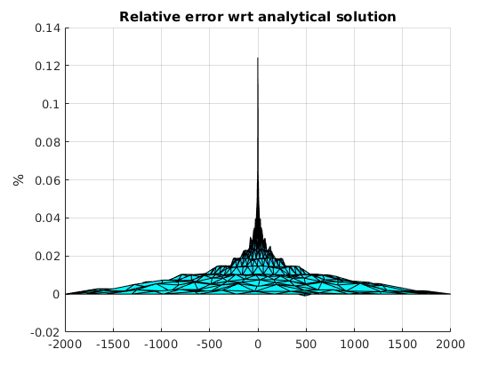

Compare mSim with analytical solution
Overview
Contents
In this tutorial we will build a simple 3D cylindrical model with one well at the center and we will compare it with the Thiem, 1906 analytical solution.
Analytical solution
The analytical solution for radial flow to a well where the head h0 is known at some point at r0 distance close to well is given by :

where Q is the pumping rate, T is the transmissivity.
To visualize the above equation we will generate random points within a disk of radious r0, triangulate them and plot
Lets define the inputs first
r0 = 2000; % [m] h0 = 30; % [m] Q = 500; % [m^3/day] T = 200; % [m^2/day]
Generate points on disk (This is actually a rectangle)
[disk_pntsX, disk_pntsY] = meshgrid(-r0:10:r0);
Evaluate the Thiem equation
Thiem = @(r)(Q/(2*pi*T))*log(r/r0)+h0; disk_pntsR = sqrt(disk_pntsX.^2 + disk_pntsY.^2);
Plot
mesh(disk_pntsX, disk_pntsY, Thiem(disk_pntsR),... 'edgecolor','none','FaceColor','interp','FaceLighting','phong') camlight right view(-76, 13) drawnow
2D Numerical solution with mSim
Mesh generation
For the numerical solution we have first to generate a mesh.
First we are going to generate a cylindrical polygon with the help of the parametric equation of a circle x = r*cos(t), y = r*sin(t) where t spans from 0 to 2*pi for a full circle
circle_bnd = [r0*cos(0:0.2:2*pi)' r0*sin(0:0.2:2*pi)'];
Prepare the shapefile structure that is needed for the mesh generation for the domain
circle_domain.Geometry = 'Polygon';
circle_domain.X = [circle_bnd(:,1)' circle_bnd(1,1) nan];
circle_domain.Y = [circle_bnd(:,2)' circle_bnd(1,2) nan];
and the well
well.Geometry = 'Point';
well.X = 0;
well.Y = 0;
well.DistMin = 1;
well.DistMax = r0;
well.LcMin = 1;
well.LcMax = 400;
Construct the CSG object
circle_dom = CSGobj_v2(2,1,10,10,1); circle_dom = circle_dom.readshapefile(circle_domain); circle_dom = circle_dom.readshapefile(well);
Define the mesh options. Here the 400 m is roughly the distance between the boundary points when r0 = 2000 and 0.2 discretization of the parametric variable that generated the circular points.
meshopt = msim_mesh_options; meshopt.lc_gen = 400; meshopt.embed_points = 1;
Generate the mesh run gmsh
circle_dom.writegeo('thiem_example', meshopt); gmsh_path = '/home/giorgk/Downloads/gmsh-4.4.1-Linux64/bin/gmsh'; circle_dom.runGmsh('thiem_example',gmsh_path,[]);
Info : Running '/home/giorgk/Downloads/gmsh-4.4.1-Linux64/bin/gmsh thiem_example.geo -2' [Gmsh 4.4.1, 1 node, max. 1 thread] Info : Started on Thu Sep 26 01:17:26 2019 Info : Reading 'thiem_example.geo'... Info : Done reading 'thiem_example.geo' Info : Meshing 1D... Info : Meshing curve 1 (Line) Info : Meshing curve 2 (Line) Info : Meshing curve 3 (Line) Info : Meshing curve 4 (Line) Info : Meshing curve 5 (Line) Info : Meshing curve 6 (Line) Info : Meshing curve 7 (Line) Info : Meshing curve 8 (Line) Info : Meshing curve 9 (Line) Info : Meshing curve 10 (Line) Info : Meshing curve 11 (Line) Info : Meshing curve 12 (Line) Info : Meshing curve 13 (Line) Info : Meshing curve 14 (Line) Info : Meshing curve 15 (Line) Info : Meshing curve 16 (Line) Info : Meshing curve 17 (Line) Info : Meshing curve 18 (Line) Info : Meshing curve 19 (Line) Info : Meshing curve 20 (Line) Info : Meshing curve 21 (Line) Info : Meshing curve 22 (Line) Info : Meshing curve 23 (Line) Info : Meshing curve 24 (Line) Info : Meshing curve 25 (Line) Info : Meshing curve 26 (Line) Info : Meshing curve 27 (Line) Info : Meshing curve 28 (Line) Info : Meshing curve 29 (Line) Info : Meshing curve 30 (Line) Info : Meshing curve 31 (Line) Info : Meshing curve 32 (Line) Info : Done meshing 1D (0.043945 s) Info : Meshing 2D... Info : Meshing surface 1 (Plane, Delaunay) Info : Done meshing 2D (0.14511 s) Info : 1293 vertices 2617 elements Info : Writing 'thiem_example.msh'... Info : Done writing 'thiem_example.msh' Info : Stopped on Thu Sep 26 01:17:26 2019
Read mesh into matlab
[p, MSH]=read_2D_Gmsh('thiem_example', 0, 0);
Reading points... Reading Elements...
Boundary conditions
In the first line we identify the boundary nodes of the mesh and then assign a constant head of h0
id_bnd = find(sqrt(sum(p.^2,2)) > 1999); CH = [id_bnd h0*ones(length(id_bnd),1)];
Well flux
For the well we find which node corresponds to the it.
id_well = find(sqrt(sum(p.^2,2)) < 0.1); FLUX_well = [id_well -Q];
Assemble
To assemble we need the transmissivity, which we set as constant on the mesh nodes
Tnd = T*ones(size(p,1),1);
Set up the standard simulation options and assemble
simopt.dim=2; simopt.el_type='triangle'; simopt.el_order='linear'; [Kglo, H]= Assemble_LHS(p, MSH(3,1).elem(1,1).id, Tnd , CH, [], simopt);
Convert Point flux matrix to sparse vector
F=sparse(FLUX_well(:,1),1,FLUX_well(:,2),length(H),1);
Solve
Hnumerical=solve_system(Kglo,H,F);
Compare the solutions
To compare the numerical solution of mSim with the analytical we have to evaluate the analytical over the points of the numerical.
Hanalytical = Thiem(sqrt(sum(p.^2,2)));
The numerical solution contains the center of well where the analytical solution cannot be defined. Therefore we will make them nan to both solutions.
Hanalytical(id_well,1) = nan; Hnumerical(id_well,1) = nan;
Now we plot the relative error with respect the analytical solution
trisurf(MSH(3,1).elem(1,1).id, p(:,1), p(:,2), 100*(Hnumerical - Hanalytical)./Hanalytical) title('Relative error wrt analytical solution') zlabel('%') view(0,0) colormap cool drawnow
We can confirm that the numerical solution follows the analytical one very close as the error is less that 1 percent.
3D Numerical solution with mSim
Next we will simulate the flow around a well using a 3D cylindrical domain. Although we could use the triangular mesh and extrude it into 3D prism elements, for this example we will generate a new mesh using quadrilaterals which will gives us hexahedral elements for the 3D mesh.
We will reuse the CSG object but change the mesh options
meshopt_quad = msim_mesh_options;
meshopt_quad.lc_gen = 400;
meshopt_quad.el_type = 'quad';
We call the same methods as before to generate and read the mesh into the workspace
circle_dom.writegeo('thiem_example_quads', meshopt_quad); circle_dom.runGmsh('thiem_example_quads',gmsh_path,[]) [p_q, MSH_q]=read_2D_Gmsh('thiem_example_quads', 0, 0);
Info : Running '/home/giorgk/Downloads/gmsh-4.4.1-Linux64/bin/gmsh thiem_example_quads.geo -2' [Gmsh 4.4.1, 1 node, max. 1 thread] Info : Started on Thu Sep 26 01:17:27 2019 Info : Reading 'thiem_example_quads.geo'... Info : Done reading 'thiem_example_quads.geo' Info : Meshing 1D... Info : Meshing curve 1 (Line) Info : Meshing curve 2 (Line) Info : Meshing curve 3 (Line) Info : Meshing curve 4 (Line) Info : Meshing curve 5 (Line) Info : Meshing curve 6 (Line) Info : Meshing curve 7 (Line) Info : Meshing curve 8 (Line) Info : Meshing curve 9 (Line) Info : Meshing curve 10 (Line) Info : Meshing curve 11 (Line) Info : Meshing curve 12 (Line) Info : Meshing curve 13 (Line) Info : Meshing curve 14 (Line) Info : Meshing curve 15 (Line) Info : Meshing curve 16 (Line) Info : Meshing curve 17 (Line) Info : Meshing curve 18 (Line) Info : Meshing curve 19 (Line) Info : Meshing curve 20 (Line) Info : Meshing curve 21 (Line) Info : Meshing curve 22 (Line) Info : Meshing curve 23 (Line) Info : Meshing curve 24 (Line) Info : Meshing curve 25 (Line) Info : Meshing curve 26 (Line) Info : Meshing curve 27 (Line) Info : Meshing curve 28 (Line) Info : Meshing curve 29 (Line) Info : Meshing curve 30 (Line) Info : Meshing curve 31 (Line) Info : Meshing curve 32 (Line) Info : Done meshing 1D (0.037992 s) Info : Meshing 2D... Info : Meshing surface 1 (Plane, Frontal Quad) Info : Blossom: 2401 internal 64 closed Info : Blossom recombination completed (0.095695 s): 788 quads, 2 triangles, 0 invalid quads, 0 quads with Q < 0.1, avg Q = 0.773688, min Q = 0.127324 Info : Done meshing 2D (0.244015 s) Info : Refining mesh... Info : Meshing order 2 (curvilinear on)... Info : Meshing curve 1 order 2 Info : Meshing curve 2 order 2 Info : Meshing curve 3 order 2 Info : Meshing curve 4 order 2 Info : Meshing curve 5 order 2 Info : Meshing curve 6 order 2 Info : Meshing curve 7 order 2 Info : Meshing curve 8 order 2 Info : Meshing curve 9 order 2 Info : Meshing curve 10 order 2 Info : Meshing curve 11 order 2 Info : Meshing curve 12 order 2 Info : Meshing curve 13 order 2 Info : Meshing curve 14 order 2 Info : Meshing curve 15 order 2 Info : Meshing curve 16 order 2 Info : Meshing curve 17 order 2 Info : Meshing curve 18 order 2 Info : Meshing curve 19 order 2 Info : Meshing curve 20 order 2 Info : Meshing curve 21 order 2 Info : Meshing curve 22 order 2 Info : Meshing curve 23 order 2 Info : Meshing curve 24 order 2 Info : Meshing curve 25 order 2 Info : Meshing curve 26 order 2 Info : Meshing curve 27 order 2 Info : Meshing curve 28 order 2 Info : Meshing curve 29 order 2 Info : Meshing curve 30 order 2 Info : Meshing curve 31 order 2 Info : Meshing curve 32 order 2 Info : Meshing surface 1 order 2 Info : Surface mesh: worst distortion = 1 (0 elements in ]0, 0.2]); worst gamma = 0.654438 Info : Done meshing order 2 (0.008207 s) Info : Done refining mesh (0.008475 s) Info : 3224 vertices 3319 elements Info : Writing 'thiem_example_quads.msh'... Info : Done writing 'thiem_example_quads.msh' Info : Stopped on Thu Sep 26 01:17:27 2019 Reading points... Reading Elements... Warning: Element type: 3 has not been tested
Next the 2D mesh is extruded to form a 3D mesh. For that we set the elevation of the top and bottom and the number of layers.
Ztop = 30*ones(size(p_q,1),1);
Zbot = 0*ones(size(p_q,1),1);
Zdistribution = [0:0.2:1];
[p3D, MSH3D] = extrude_mesh(p_q, MSH_q, Ztop, Zbot, Zdistribution, 'linear');
Boundary conditions
In a similar way with the 2D case we identify the mesh nodes that lay on the circle with radius r0
id_bnd = find(sqrt(sum(p3D.^2,2)) > 1999); CH = [id_bnd h0*ones(length(id_bnd),1)];
Well flux
Unlike the previous example in this case we didnt force the mesh generation to embed the points that lay inside the domain. Therefore searching for nodes that are very close to well will return nothing
find(sqrt(sum(p3D.^2,2)) < 0.1)
ans = 0×1 empty double column vector
Instead we will find the element in the 2D mesh that contains the well
el_id = find_elem_id_point(p_q, MSH_q(3,1).elem.id, [0, 0], 10);
The element consists on four nodes with coordinates:
well_elem_coords = p_q(MSH_q(3,1).elem.id(el_id,:),:);
When the point sources do not coinside with the mesh nodes then the fluxes are distributed to the mesh elements they belong to. In our example the well screen spans the entire depth of the aquifer therefore the pumping will be distributed to all mesh nodes with the same x y locations as the ones of the 2D element that contains the well. However the contribution on each node can be estimated based on the barycentric coordinates of the well with respect the element. In mSim we can calculate the barycentric coordinates for 2D elements as:
bary_coords = BaryCoord2D( [0, 0], well_elem_coords(:,1:2) ); clf plot(well_elem_coords([1:4 1],1),well_elem_coords([1:4 1],2),'.-') hold on plot(0, 0, 'or') text(0.01, 0.01, 'well', 'fontsize', 16) for ii = 1:4 text(well_elem_coords(ii,1)+0.01, well_elem_coords(ii,2)+0.01, num2str(bary_coords(ii)), 'fontsize', 14); end axis equal drawnow
Now we can loop through the element nodes and assign the pumping for the mesh nodes
FLUX_well = []; for ii = 1:size(well_elem_coords,1) k = find(sqrt((p3D(:,1) - well_elem_coords(ii,1)).^2 + (p3D(:,2) - well_elem_coords(ii,2)).^2) < 0.1); FLUX_well = [FLUX_well;k -Q*bary_coords(ii)/length(k) * ones(length(k),1)]; end sum(FLUX_well(:,2))
ans = -500.0000
The last line is used as a verification that the fluxes have been distributed correctly.
Assemble
For the assembly we need to specify the hydraulic conductivity. The depth of the aquifer is 30 meters therefore the conductivity is uniform on each element and equal to:
Kel = T/30*ones( size(MSH3D(4,1).elem(1,1).id,1), 1);
Nest we setup the simulation options
simopt.dim = 3; simopt.el_type = 'hex'; simopt.el_order = 'linear'; [Kglo, H]= Assemble_LHS(p3D, MSH3D(4,1).elem(1,1).id, Kel , CH, [], simopt);
Convert Point flux matrix to sparse vector
F=sparse(FLUX_well(:,1),1,FLUX_well(:,2),length(H),1);
Solve
This problem in 3D is non-linear as the conductance matrix Kglo depends on the elevation of the mesh vertices of the free surface boundary.
Therefore we will solve this problem iteratively. We are going to need the ids that correspond to the top points. By taking advantage the way the extrude_mesh works we know that the ids from 1:size of 2D nodes correspond to the top layer
id_top = 1:size(p_q,1); iter = 1; Hold = Ztop; clear err while true Hnew=solve_system(Kglo,H,F); % check the error err(iter,1) = mean(sqrt((Hold(id_top) - Hnew(id_top)).^2)); if err(end,1) < 0.0001 break; end % Adapth the mesh to the new solution. DZ = 0.5*(Hold(id_top) - Hnew(id_top)); [p3D, MSH3D]=extrude_mesh(p_q,MSH_q, Hold(id_top) - DZ ,Zbot, Zdistribution ,'linear'); % In this example we dont have to update the right hand side so all we % need is to update the conductance matrix [Kglo, H]= Assemble_LHS(p3D, MSH3D(4,1).elem(1,1).id, Kel , CH, [], simopt); % save the solution of the previous iteration Hold = Hnew; iter = iter + 1; end
In this example we have set a rather strict error criterion, that the mean square error is less than 0.0001. This is achieved after 7 iterations.
clf semilogy(err,'o-') grid on ylabel('Mean square error [m]') xlabel('Iteration') drawnow
Compare with analytical
To compare the 3D numerical solution with the analytical we have to evaluate the analytical solution over the nodes of the 2D mesh that was used to extrude and generate the 3D mesh.
Hanalytical = Thiem(sqrt(sum(p_q.^2,2)));
The 2D mesh consists of quadrilaterals, yet matlab does not have any function to plot a quadrelateral mesh. Therefore we will triangulate the mesh first and use the trisurf as we did previously for the triangular mesh.
tr = delaunay(p_q(:,1), p_q(:,2)); clf trisurf(tr, p_q(:,1), p_q(:,2), 100*(Hnew(id_top) - Hanalytical)./Hanalytical) title('Relative error wrt analytical solution') zlabel('%') view(0,0) colormap cool drawnow
Again we see that the error of the numerical solution is less than 1% expect very close to the well point where the analytical solution cannot be defined.